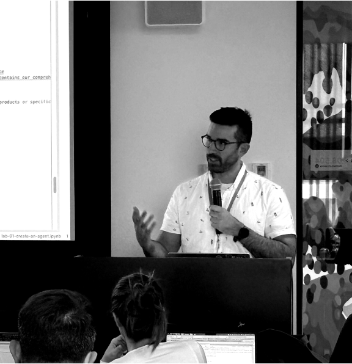

Ruben Afonso
Data & AI Leadership, Financial Services
🎯 What I do
Data and AI strategy in financial services — turning enterprise data and agentic AI into trusted, measurable outcomes.
🧭 Areas of interest
People — Building engineering cultures where AI and data fluency become second nature.
Processes — Governance and risk management as innovation guardrails.
Technology — Setting the platform bets that prepare the organization for the future of data and AI.